Практическая работа №3.1. "Django Web framework. Запросы и их выполнение"
Цель работы: получить представление о работе с запросами в Django ORM.
Задание №1. Создание объектов
Будем использовать командную строку для взаимодействия с проектом. Откроем интерпретатор и приступим к реализации поставленных задач.
Необходимо написать запрос на создание 6-7 новых автовладельцев и 5-6 автомобилей, каждому автовладельцу назначить удостоверение и от 1 до 3 автомобилей.
Ниже приведу скриншоты с запросами в командной строке и результатами заполнения таблиц при просмотре через админскую панель:
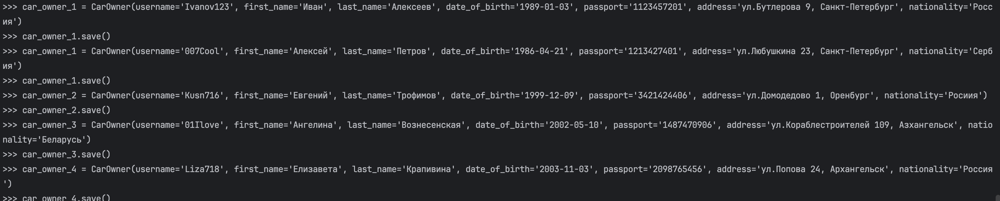
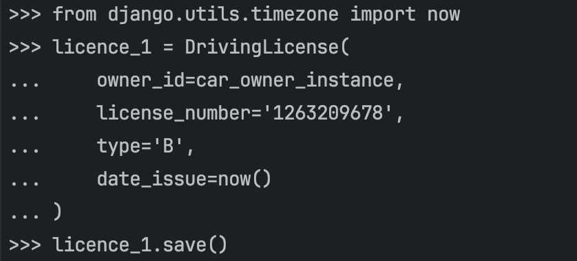
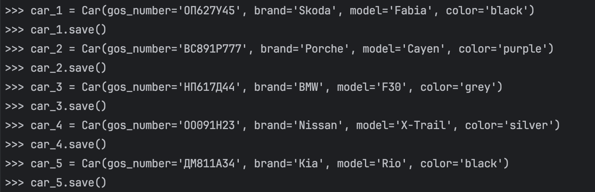
В результате получилось заполнить данными в необходимом количестве все таблицы:
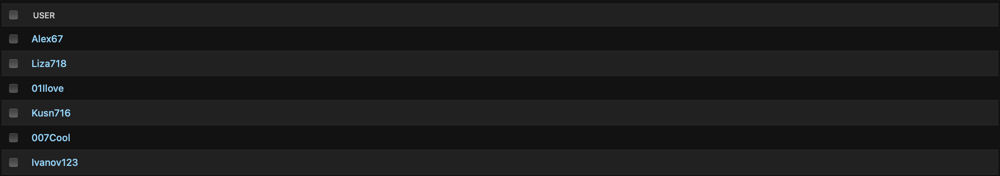
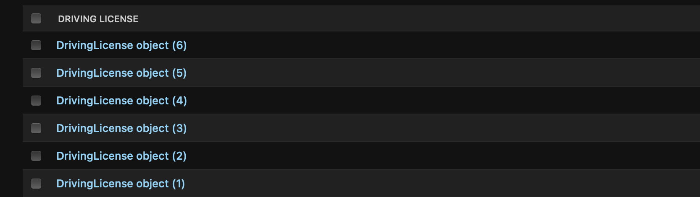
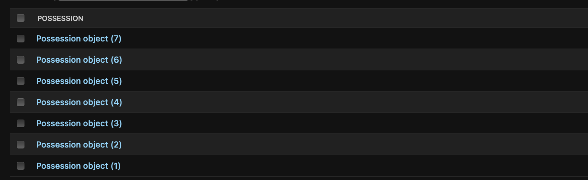
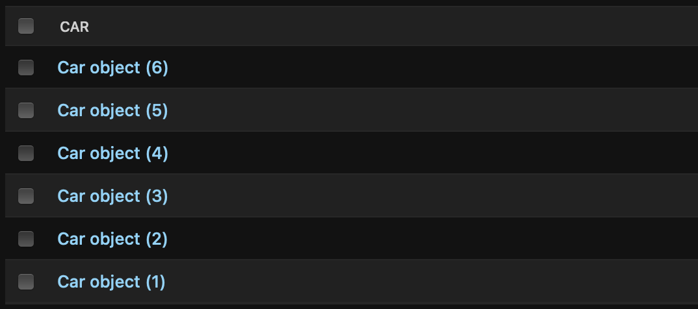
Задание №2. Создание простых запросов
По созданным данным написать следующие запросы на фильтрацию: - Где это необходимо, добавить related_name к полям модели
class Possession(models.Model):
owner_id = models.ForeignKey(CarOwner, on_delete=models.CASCADE, null=True, related_name='possessions')
car_id = models.ForeignKey(Car, on_delete=models.CASCADE, null=True, related_name='car_possessions')
date_start = models.DateTimeField()
date_end = models.DateTimeField(null=True)
Вывести все машины конкрентной марки. В моем случае это будет Subaru
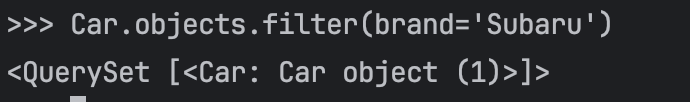
Найти всех водителей с конкрентными именем (Ангелина)
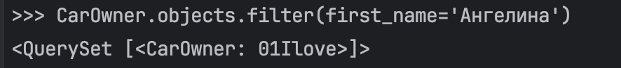
Взяв любого случайного владельца, получить его id, и по этому id получить экземпляр удостоверения в виде объекта модели
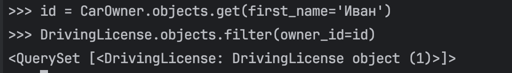
Вывести всех владельцев красных машин
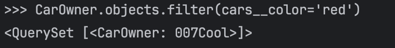
Найти всех владельцев, чей год владения машиной начинается с 2018
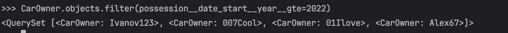
Задание №3. Агрегация и аннотация запросов
Необходимо реализовать следующие запросы c применением описанных методов: - Вывести дату выдачи самого старшего водительского удостоверения
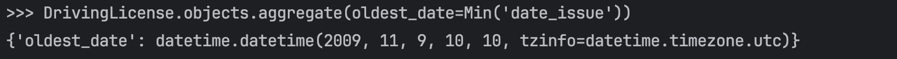
- Указать самую позднюю дату владения машиной, имеющую какую-то из существующих моделей в базе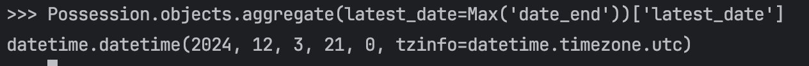
- Вывести количество машин для каждого водителя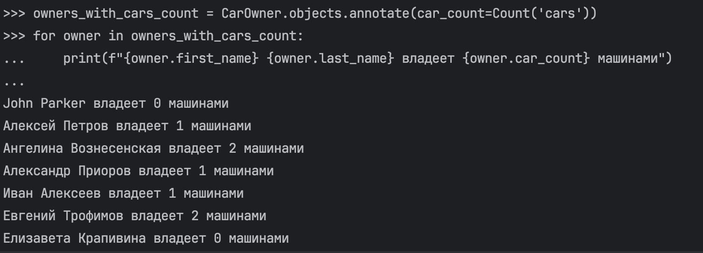
- Подсчитать количество машин каждой марки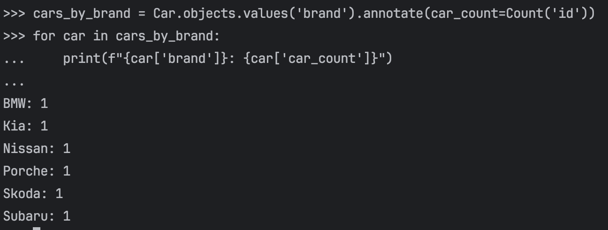
- Отсортировать всех автовладельцев по дате выдачи удостоверения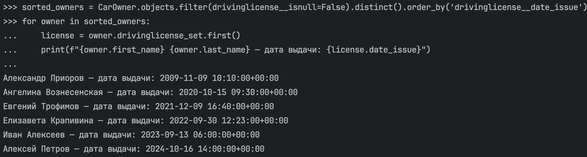
Пояснение:
В рамках данной работы мне удалось познакомиться и реализовать создание объектов, простых запросов, а также агрегацию и аннотацию.